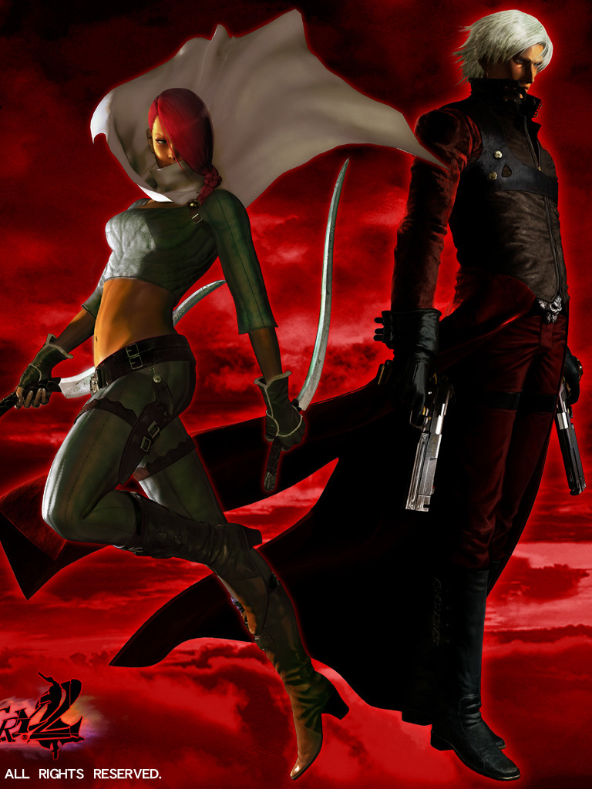

Lucia
Lucia, também conhecida como Χ (Chi), é um demônio manequim criado por Arius. Ela desertou dele e se tornou um membro do clã dos Protetores, adotada por Matier como sua filha e aprendiz para ser treinada como Caçadora de Demônios. Mais tarde, ela trabalhou ao lado de Dante para derrotar Arius e Argosax. Ela aparece em Devil May Cry 2 como um dos protagonistas principais e um personagem jogável.

Lucia atrai Dante para sua ilha para que Matier, sua mãe, possa pedir-lhe para ajudá-los a derrotar Arius, um feiticeiro / milionário que planeja se fundir com Argosax (um demônio poderoso) e dominar o mundo. Matier pede a Dante para ajudar Lúcia a encontrar as partes restantes dos Arcanas, as quatro antigas relíquias sagradas usadas para selar Argosax longe deste mundo e os artefatos que Arius tanto deseja. Dante aceita, e ele e Lúcia começam suas missões separadamente.
Mais tarde, Lucia conhece Arius. Arius revela que ela é na verdade um manequim, e foi criada por ele. Ele diz que ela era um "defeito" e estava prestes a ser eliminada quando Matier a encontrou. Ele também diz a ela que uma marca em seu ombro esquerdo - "X" (Chi) (pronuncia-se "Kai") - é na verdade seu nome verdadeiro. Em seguida, ele exige que Lúcia lhe dê os Arcanas que ela já encontrou, mas ela o rejeita com raiva, ele diz que "o mundo já está deformado" e que "tudo que pertence aos demônios acabará voltando à sua forma original", incluindo Lúcia, e a deixa, incerta sobre seu próprio futuro.
Apesar disso, Lúcia continua sua missão de encontrar todas as partes restantes dos Arcanas. Quando ela reúne todos eles, ela dá Arcana para Dante, pedindo-lhe para trazê-los para Matier para ela. Depois disso, ela sai para acabar com Arius sozinha, mas não tem sucesso e é capturada. Mais tarde, Dante vem resgatá-la e distribui todos os Arcanas, apesar dos protestos de Lúcia. Após a luta de Ário e Dante, o feiticeiro usa seu refém para puxar os dois para fora do prédio. No entanto, Dante se transforma em um demônio e eles voam para uma área de segurança. Lúcia então pergunta por que ele a salvou, ao que ele responde que "todo herói tem uma fraqueza".
Lúcia e Dante conseguem entrar novamente no prédio arranha-céu da Corporação Uroboros, só para ver que o sol eclipsou completamente e que o ritual não pode ser interrompido. Depois que algo dá errado, é revelado que Dante trocou a moeda Medaglia pela sua. Dante ataca o distraído Arius e o derrota. Assistindo este aparentemente acabar, Lúcia ataca Dante e pede a ele para matá-la. Ela conta a ele sobre suas dúvidas e então pede que ele a mate novamente. Antes que Dante possa decidir qualquer coisa, a porta para o Mundo Demoníaco se abre, mesmo que o ritual esteja incompleto, Lúcia diz que irá porque é "dispensável", ao que Dante sugere que seja deixada ao destino. Depois que cabeças caem mais uma vez, ele pega uma motocicleta e entra no Mundo Demoníaco. Depois que Dante sai, Arius, agora completamente transformado em um monstro morto-vivo vingativo, sai do fogo do inferno das ruínas do prédio que tinha sido o gigante, Nefasturris, mas Lúcia coloca essa abominação distorcida para descansar. Pouco depois, ela é vista perto do portal fechado entre os quatro arranha-céus separados de Uroboros, esperando por Dante. Matier também está aqui, e a conforta, dizendo que ela não deve se preocupar porque "tudo está como era com Sparda". Lucia então pega a moeda que Dante deu a ela e revela que os dois lados são cara.
Muito mais tarde, Lúcia é mostrada esperando na loja de Dante, jogando sua moeda continuamente. Ela então ouve uma motocicleta do lado de fora da loja e sai correndo. No entanto, se isso é Dante ou não, nunca é revelado
Ela possui um lado humorístico. Ao descobrir que a moeda de Dante é na verdade uma moeda de duas cabeças, ela sorri enquanto ri e carinhosamente se refere a ele como "Aquele macho ...".
Biografia
Em Devil May Cry 2:
Lucia atrai Dante para sua ilha para que Matier, sua mãe, possa pedir-lhe para ajudá-los a derrotar Arius, um feiticeiro / milionário que planeja se fundir com Argosax (um demônio poderoso) e dominar o mundo. Matier pede a Dante para ajudar Lúcia a encontrar as partes restantes dos Arcanas, as quatro antigas relíquias sagradas usadas para selar Argosax longe deste mundo e os artefatos que Arius tanto deseja. Dante aceita, e ele e Lúcia começam suas missões separadamente.
Mais tarde, Lucia conhece Arius. Arius revela que ela é na verdade um manequim, e foi criada por ele. Ele diz que ela era um "defeito" e estava prestes a ser eliminada quando Matier a encontrou. Ele também diz a ela que uma marca em seu ombro esquerdo - "X" (Chi) (pronuncia-se "Kai") - é na verdade seu nome verdadeiro. Em seguida, ele exige que Lúcia lhe dê os Arcanas que ela já encontrou, mas ela o rejeita com raiva, ele diz que "o mundo já está deformado" e que "tudo que pertence aos demônios acabará voltando à sua forma original", incluindo Lúcia, e a deixa, incerta sobre seu próprio futuro.
Apesar disso, Lúcia continua sua missão de encontrar todas as partes restantes dos Arcanas. Quando ela reúne todos eles, ela dá Arcana para Dante, pedindo-lhe para trazê-los para Matier para ela. Depois disso, ela sai para acabar com Arius sozinha, mas não tem sucesso e é capturada. Mais tarde, Dante vem resgatá-la e distribui todos os Arcanas, apesar dos protestos de Lúcia. Após a luta de Ário e Dante, o feiticeiro usa seu refém para puxar os dois para fora do prédio. No entanto, Dante se transforma em um demônio e eles voam para uma área de segurança. Lúcia então pergunta por que ele a salvou, ao que ele responde que "todo herói tem uma fraqueza".
Lúcia e Dante conseguem entrar novamente no prédio arranha-céu da Corporação Uroboros, só para ver que o sol eclipsou completamente e que o ritual não pode ser interrompido. Depois que algo dá errado, é revelado que Dante trocou a moeda Medaglia pela sua. Dante ataca o distraído Arius e o derrota. Assistindo este aparentemente acabar, Lúcia ataca Dante e pede a ele para matá-la. Ela conta a ele sobre suas dúvidas e então pede que ele a mate novamente. Antes que Dante possa decidir qualquer coisa, a porta para o Mundo Demoníaco se abre, mesmo que o ritual esteja incompleto, Lúcia diz que irá porque é "dispensável", ao que Dante sugere que seja deixada ao destino. Depois que cabeças caem mais uma vez, ele pega uma motocicleta e entra no Mundo Demoníaco. Depois que Dante sai, Arius, agora completamente transformado em um monstro morto-vivo vingativo, sai do fogo do inferno das ruínas do prédio que tinha sido o gigante, Nefasturris, mas Lúcia coloca essa abominação distorcida para descansar. Pouco depois, ela é vista perto do portal fechado entre os quatro arranha-céus separados de Uroboros, esperando por Dante. Matier também está aqui, e a conforta, dizendo que ela não deve se preocupar porque "tudo está como era com Sparda". Lucia então pega a moeda que Dante deu a ela e revela que os dois lados são cara.
Muito mais tarde, Lúcia é mostrada esperando na loja de Dante, jogando sua moeda continuamente. Ela então ouve uma motocicleta do lado de fora da loja e sai correndo. No entanto, se isso é Dante ou não, nunca é revelado
Aparência
Alta e ágil, Lúcia aparece como uma mulher atraente de pele bronzeada. Ela usa seu cabelo ruivo brilhante em uma trança sobre o ombro esquerdo. As peças mais notáveis de seu guarda-roupa são a capa branca e curta e a barriga exposta. Ela também tem olhos verdes esmeralda profundos, que ajudam a acentuar sua pele bronzeada e cabelos ruivos brilhantes. Ela usa luvas de couro marrom com forro branco e vários equipamentos de couro marrom em sua roupa: os coldres para as lâminas, as bolsas para as facas de arremesso, bem como uma série de fechos de couro para ajudar a manter a capa no lugar. Seu cabelo ruivo, capa branca e top / calça cinza foram feitos para espelhar o esquema de cores de Dante.
Personalidade
Lúcia leva seu trabalho como guardiã a sério, sendo franca e direta ao falar. No entanto, ela possui um lado suave e gentil, visto que ela mostra gentileza e carinho por Matier em várias ocasiões (apesar de saber mais tarde que eles não são parentes de sangue) e Dante, em quem ela confiou sem objeções de qualquer ordenar. Lucia também é muito altruísta, e após descobrir que ela era um demônio criado por Ário, ela pede Dante matá-la para impedi-la de ir e matar pessoas inocentes, como Arius disse que o faria. Ela também é mostrada abertamente preocupada com a segurança de Dante quando ele afirma que pretende entrar no portal. No romance Devil May Cry 5: Before the Nightmare, é revelado que Lucia tem sentimentos por Dante após os dois se reunirem em Vie de Marli e derrotar o demônio do fogo, Balrog.
Ela possui um lado humorístico. Ao descobrir que a moeda de Dante é na verdade uma moeda de duas cabeças, ela sorri enquanto ri e carinhosamente se refere a ele como "Aquele macho ...".